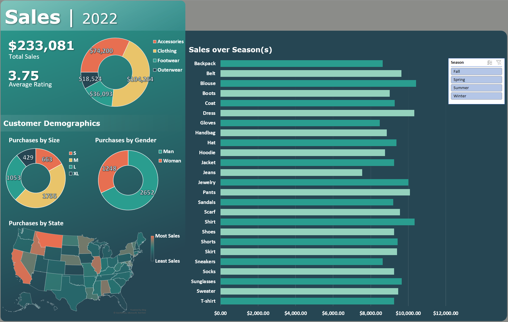

Yearly Sales Report
Data-driven sales report designed in Excel to inform business and marketing strategy for the year ahead

- Context — Data set contains a record of each sale during a year, including what was bought, how much was spent, and where the customer lives
- Problem — To make sure the organization is meeting performance goals and to help inform future strategy, analyze how well the organization is performing (sales and average rating), and what types of customers are buying the most and what products are selling the best
- Importance — It is crucial to assess potential areas of improvement, including determining what types of customers find the products most appealing to potentially course-correct toward the desired market or further niche down and prioritize targeting the current customers even more
- Insights and Next Steps —
- Continue collecting sales data — Tracking future sales would enable the creation of a real-time dashboard that can be referenced to assess performance indicators at regular intervals.
- Establish customer ID system — Finding a viable system to associate each customer with a unique, consistent ID would enable higher-resolution insights into customer behavior.
- Collect data to qualify ratings — While an average rating of 3.75 out of 5 is not bad, it likely could be improved, and collecting more data—quantitative or qualitative—about why customers are leaving certain ratings would provide information about what customers feel the organization can improve
- Consider current vs. desired customers and course correct if needed — The specific strategy would depend on the products and market, but the organization is currently selling the most to men and to people who wear the size medium and large clothing options the organization sells. Given the limited data and information about the business context, this indicates a possible issue with size availabilty (e.g., offering plus sizes could attract more customers) or with marketing (e.g., products appealing more to men than desired for optimal sales).
- Evaluate current products — The majority of sales come from clothing and accessories, with footwear and outerwear lagging significantly. Organization should assess if this lag is expected/acceptable and consider viable options.
Links to project files
Project Overview
This dataset is sourced from Sourav Banerjee at kaggle.com, and is simulated data created using ChatGPT. The data is organized within one table containing a record for each sale including the customer's demographics, the category of and specific type of product they bought, the review rating they left, and some characteristics of the purchase (e.g., whether a promo code was used). For the sake of this project, I decided to use the data to create a report that visualizes performance-relevant data to help inform future strategy.Assumptions and Limitations
Given that each row has a unique customer ID and includes a "previous purposes" column of integers, the assumption was made that each sale represented a unique customer. Additionally, no information was given about the anchors/ranged ChatGPT used to simulate reviews, but given the range of values in the column, the review rating appears to be a 5-point scale (with the assumption being made that higher ratings indicate a more positive evaluation of the customer experience).
General Strategy
I used PivotTables to summarize customer demographics (sales by customer gender, clothing size, and state of residence) and sales by category and product type. I then used a Slicer with the product type PivotTable to enable stakeholders to quickly change the product sales barchart on the report to explore how each product sells during specific seasons. Finally, because location density plots often primarily reflect state density at the expense of meaningful visualizations, I established an external data connection to populate a table with the population of each state within the United States, which I then used to normalize the number of individual sales within a state to each state's population using a simple XLOOKUP function. Though this visualization provides some insight into "hotspots" where residents are especially interested in the organization's products, I felt that the volume of sales was low enough that the visualization of the raw data would provide more general value on the report than the normalized visualization.